A1 방문자 · 회원
Multilingual Concierge
RAG 기반으로 여러 언어로 고객 맞춤형 안내와 예약, 문제 해결 서비스를 제공하는 전문가나 시스템
답마다 출처 번호와 출처 목록을 붙여, 읽는 사람이 근거를 직접 확인할 수 있습니다.
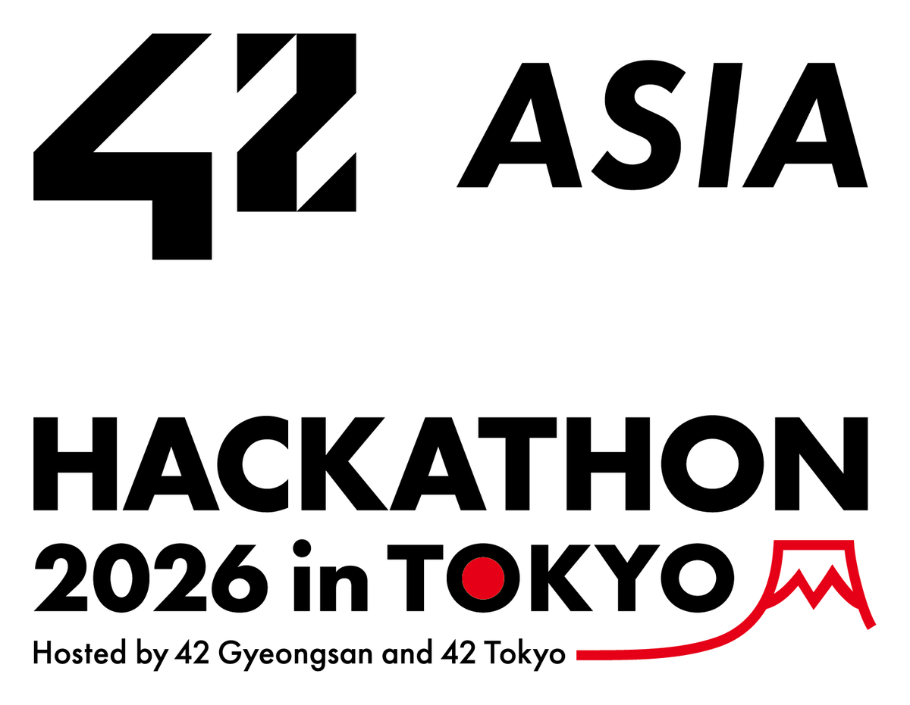
42 GYEONGSAN × 42 TOKYO · 2026.11
TEAMMirai未来
The CCIFJ Challenge 3위 · ¥50,000
주일 프랑스상공회의소(CCIFJ)의 회원 상담, 행사 추천, 기업 연결, 회원 수요 분석 등으로 직원을 돕고, 가입 기관과 회원들의 활동을 돕는 AI 에이전트입니다. 답변에 출처를 함께 보여주며, 회원이나 기업에 보낼 내용은 직원이 확인하고 승인합니다.
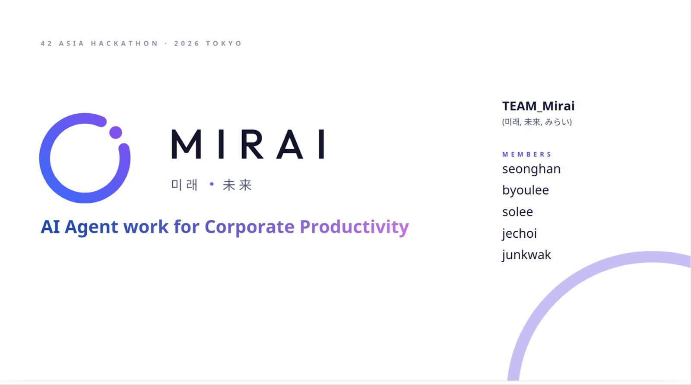
에이전트를 만들기 전에 팀은 CCIFJ의 사이트와 서비스, 행사부터 읽었습니다. CCIFJ의 가장 큰 자산을 회원 네트워크로 보고, 회원 상담에서 직원의 다음 결정까지 한 흐름으로 이어지는 네 에이전트를 설계했습니다. 실제 사이트에서 쓰는 모습을 보여주려고, 리버스 엔지니어링으로 회사 웹사이트를 조사해 시스템을 파악하고 가져온 뒤 그 위에 배포했습니다.
사이트·서비스·행사를 먼저 읽고 문제를 다시 정의
네 에이전트가 한 흐름으로 이어지게
리버스 엔지니어링으로 회사 웹사이트를 조사해 시스템을 파악하고, 가져온 뒤 Azure에 배포
A1 방문자 · 회원
RAG 기반으로 여러 언어로 고객 맞춤형 안내와 예약, 문제 해결 서비스를 제공하는 전문가나 시스템
답마다 출처 번호와 출처 목록을 붙여, 읽는 사람이 근거를 직접 확인할 수 있습니다.
A2 회원
개인회원 매니지먼트
새 회원에게 목표와 관심사를 묻고, 맞는 행사·서비스를 추천하면서 왜 맞는지도 설명합니다.
A3 직원
근거 기반 B2B 매칭
소개 요청을 후보 기업과 조건별 근거로 정리합니다. AI는 결정하지 않고, 직원이 승인합니다.
A4 직원 · 운영
제품이나 서비스에 대한 시장 수요를 깊이 이해하고, 그 이면에 숨겨진 고객의 니즈와 구매 동기를 파악
앞의 세 에이전트에서 모인 데이터로 회원이 원하는 것, 수요가 큰 서비스, 필요한 연결을 보여줍니다.
회원직원다음 결정 네 에이전트는 하나의 흐름으로 이어집니다.
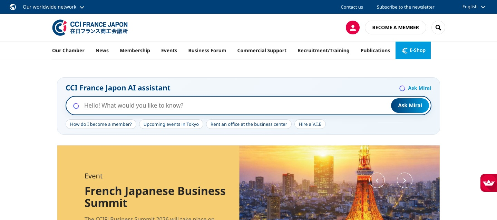


Mirai 시스템 구성
방문자 화면·직원 워크스페이스·WhatsApp·Prisme.ai의 요청은 모두 Node.js 웹 서버 코어를 거쳐 Python 에이전트 서비스로 갑니다. 기업에 보내는 제안은 승인 게이트를 통과해야 Odoo·GetResponse로 넘어갑니다.
● 내 담당◐ 함께팀원
A1–A4는 이 서비스의 AI-agent 4종류입니다
하는 일
● 표시와 보라 테두리가 제가 맡은 부분이고, 회색 상자는 팀원이 맡았습니다.
보는 법
상자를 누르면 설명이 고정되고, 다시 누르면 풀립니다.
이유
연결된 상자와 선만 밝게 남아서 데이터가 어디로 흐르는지 보입니다.
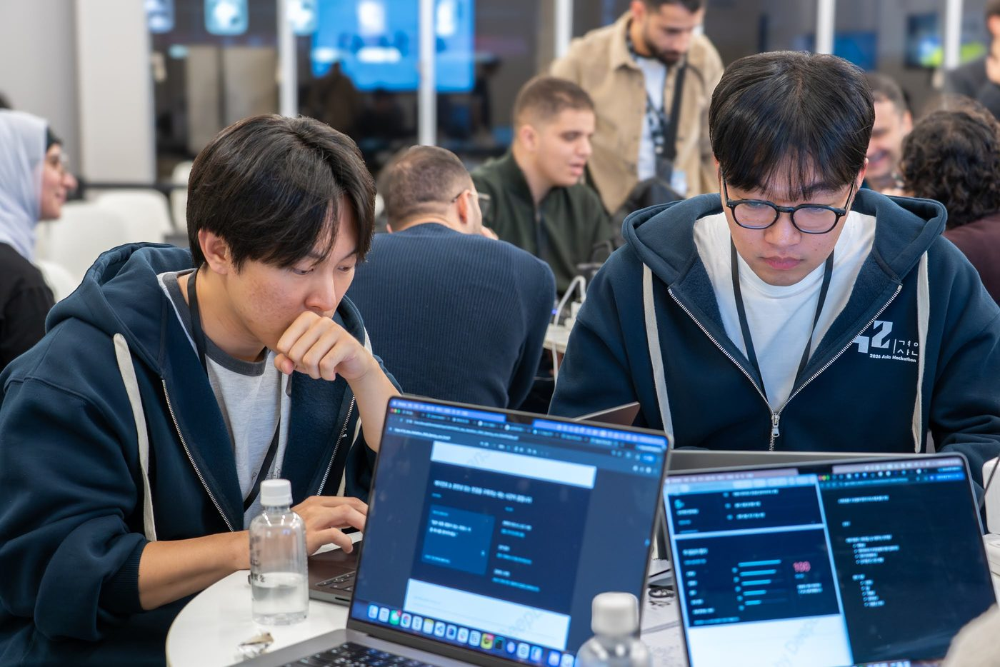
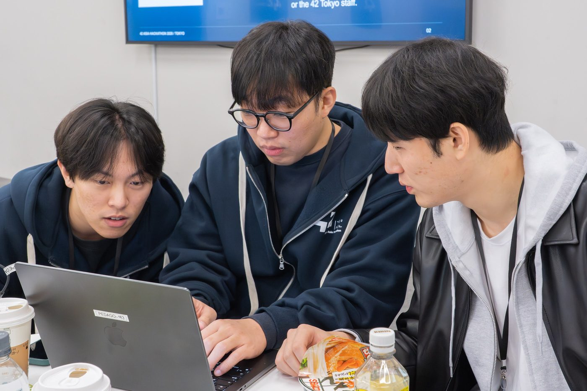
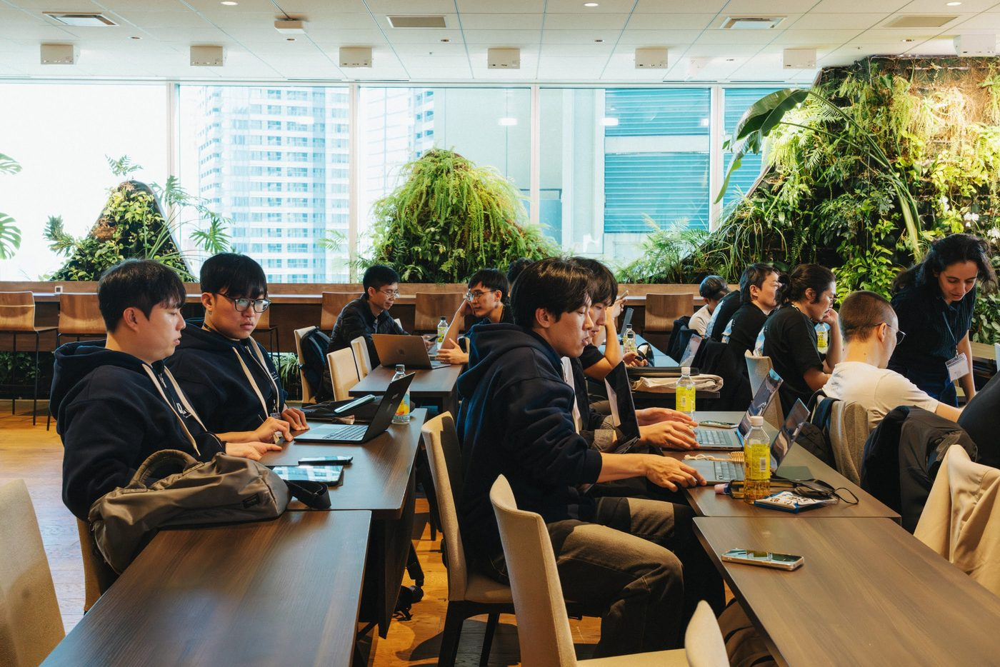
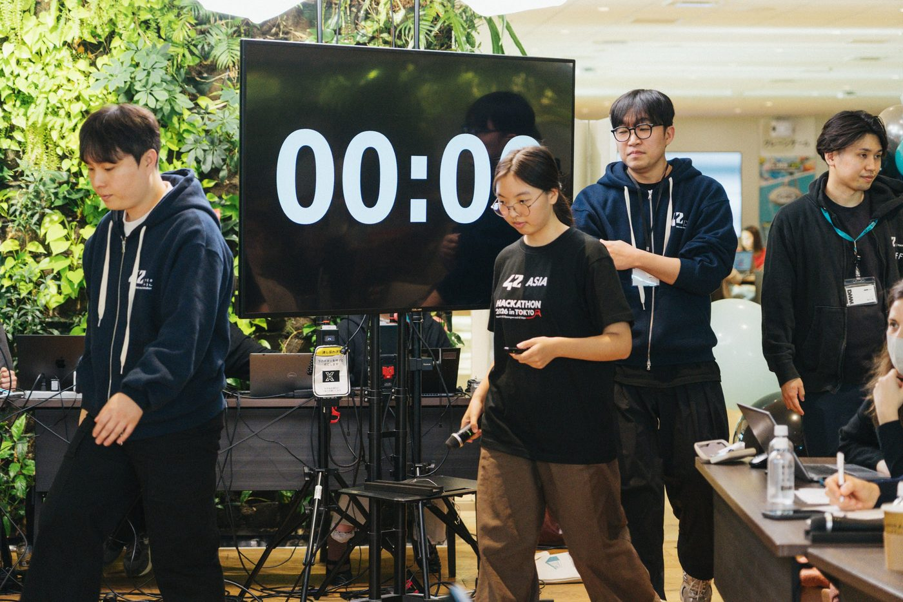
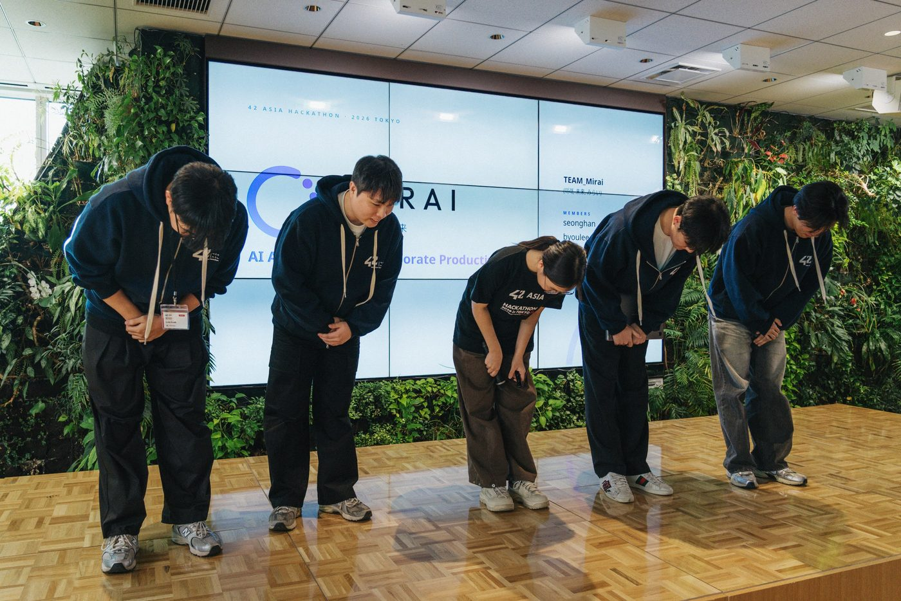
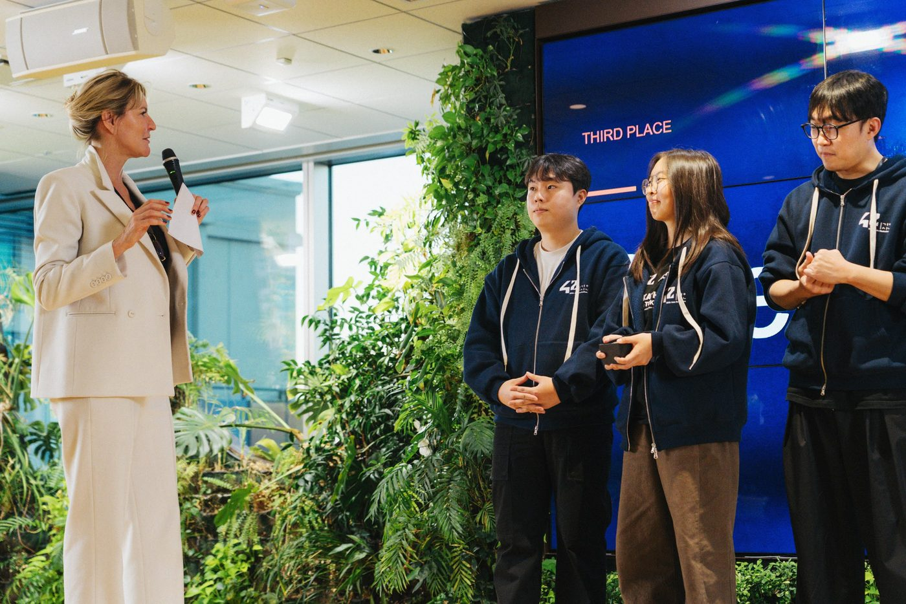
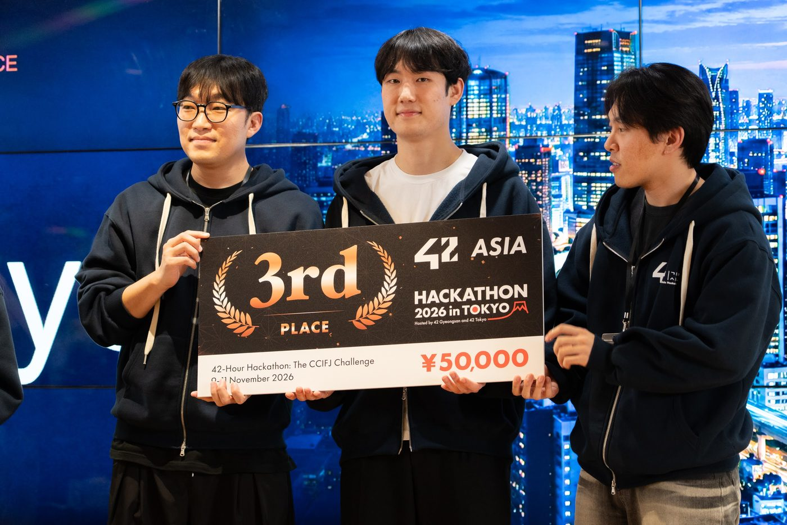
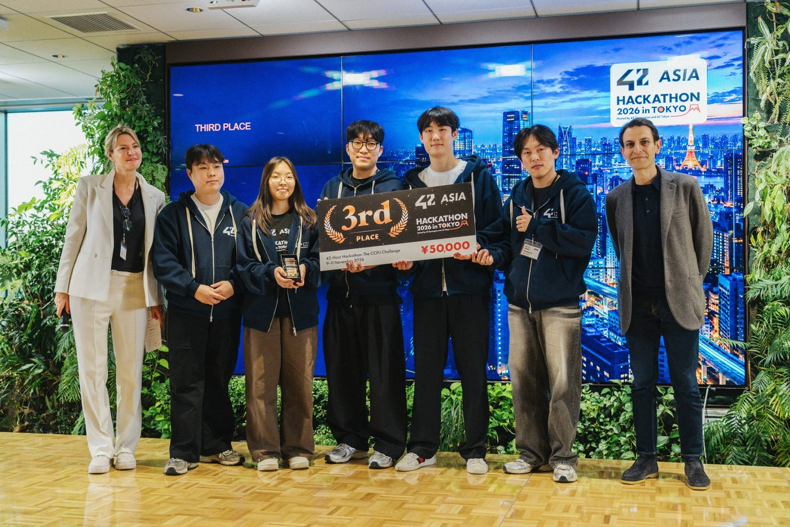
사진: 42 Asia Hackathon 2026 in Tokyo 현장 기록.

WHY “MIRAI”
팀 이름 Mirai는 한국어와 일본어에서 같은 소리로 ‘미래’라는 뜻입니다.
For us, Mirai means building a better future together.